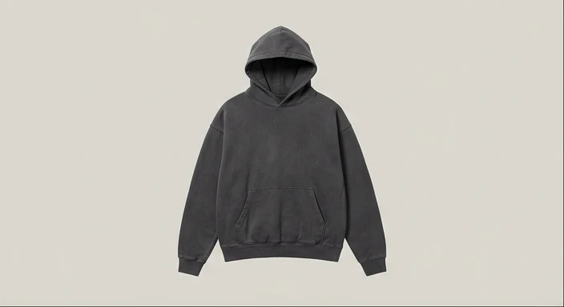
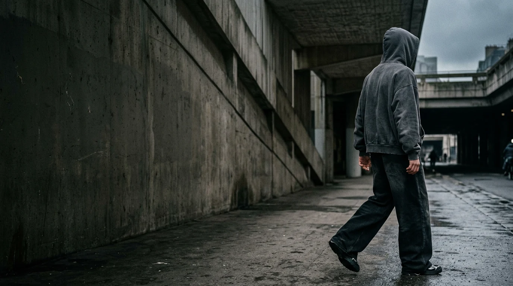
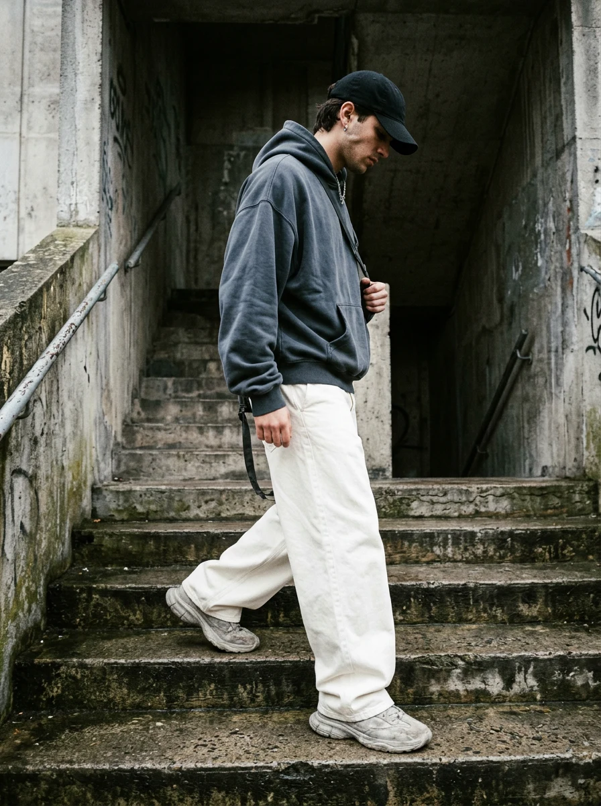
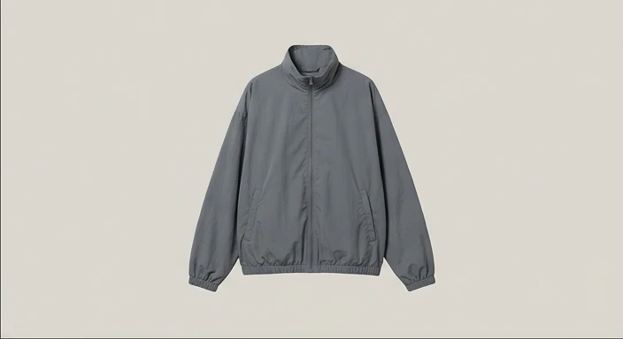
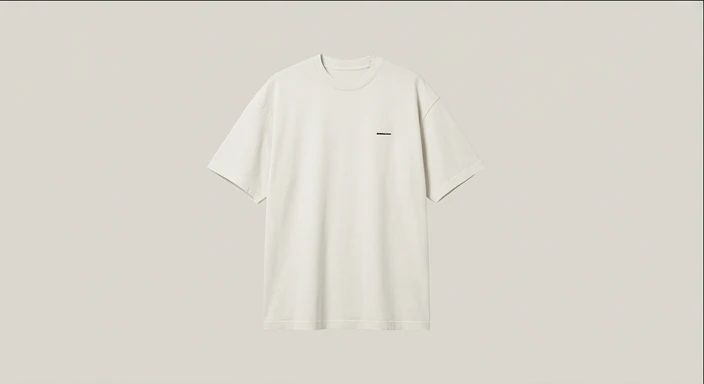
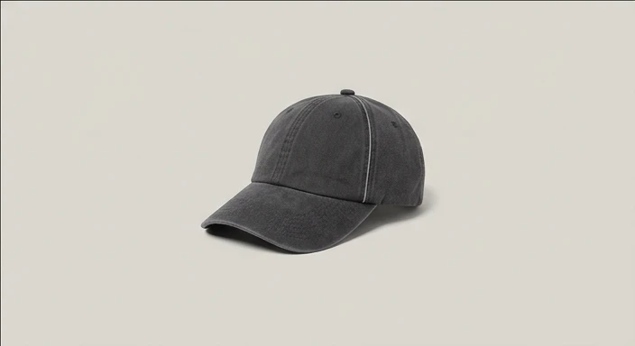
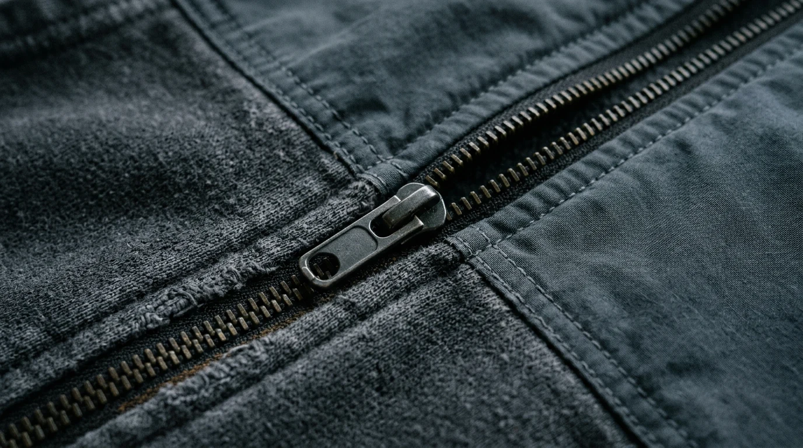

01

CONCEPT IAField Hoodie
Hoodie oversize en coton lourd, lavé et structuré.
Produit de démonstration

Des vêtements essentiels, construits pour vivre dehors.
Des pièces simples, pensées pour les déplacements, les couches et les usages quotidiens.
Moins de bruit. Plus de présence.
Le mouvement comme point de départ.
OUTSIDE SYSTEM — 01

Drop 01 — Outside System
01 — 04 / Collection de démonstration

CONCEPT IAHoodie oversize en coton lourd, lavé et structuré.
Produit de démonstration

CONCEPT IACouche légère de protection.
Produit de démonstration

CONCEPT IATee ample, imprimé discret, finition patinée.
Produit de démonstration

CONCEPT IACasquette six panneaux souple, détail réfléchissant.
Produit de démonstration

La texture, la patine, la présence.
Des volumes pensés pour se superposer.
Le quotidien comme terrain d’expression.
Une intention utilitaire, sans superflu.
Intentions de design — détails techniques à définir.
Un premier regard sur ce qui vient.
Prototype visuel uniquement : champ et bouton inactifs. Aucune adresse n’est collectée, aucune inscription ni aucun envoi ne sont effectués.
Accès anticipé fictif / Date à confirmer